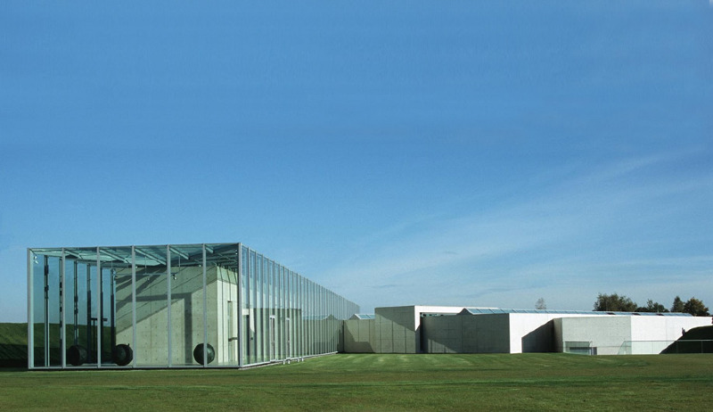
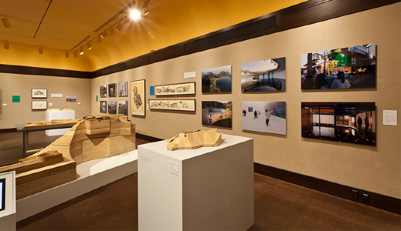
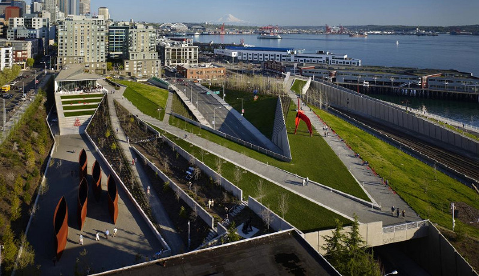
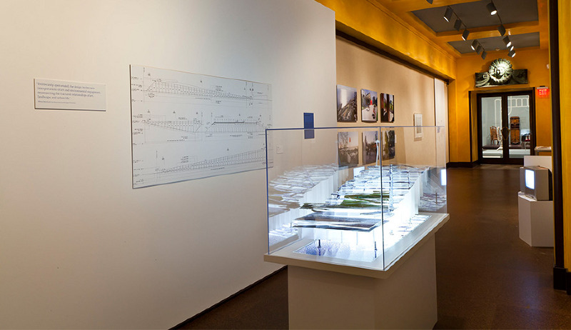
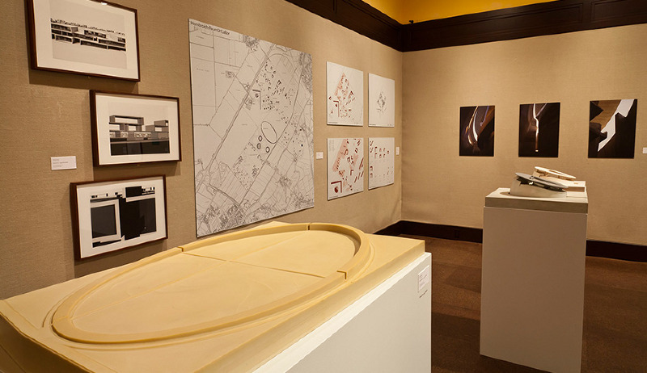
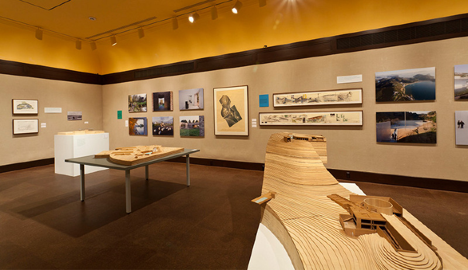
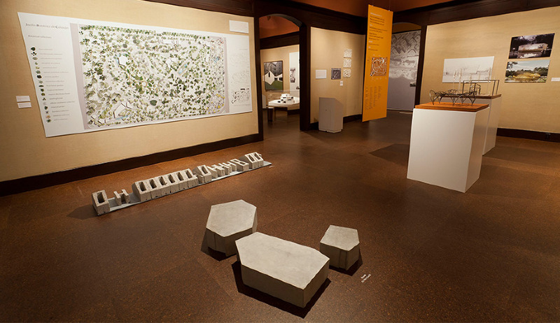
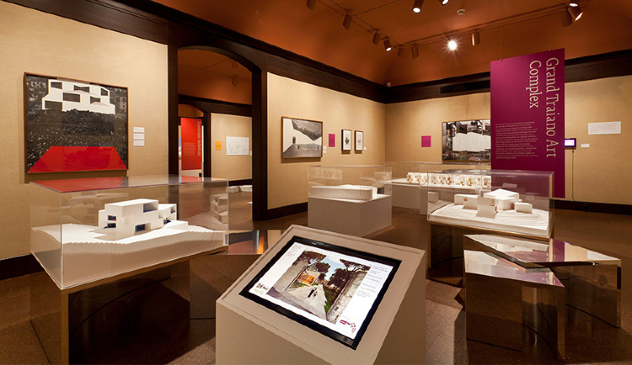
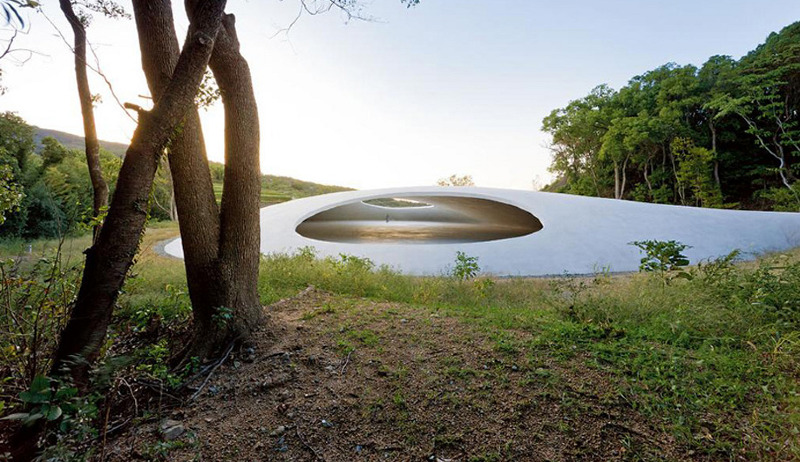
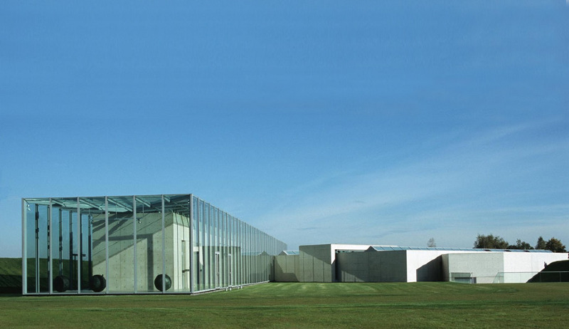
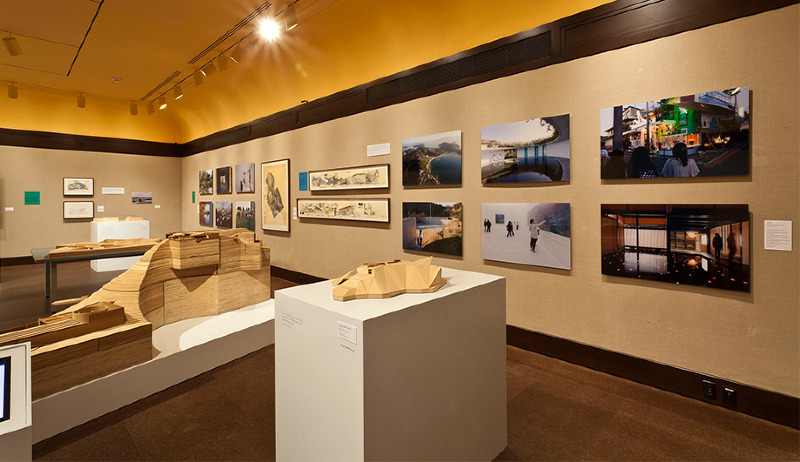
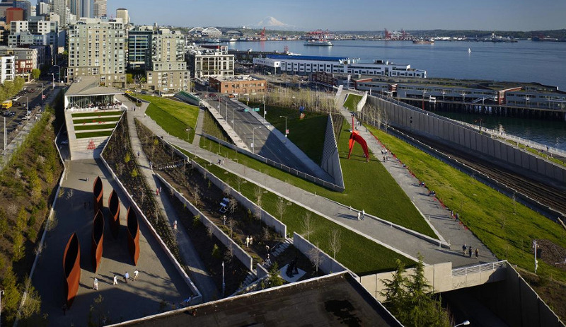
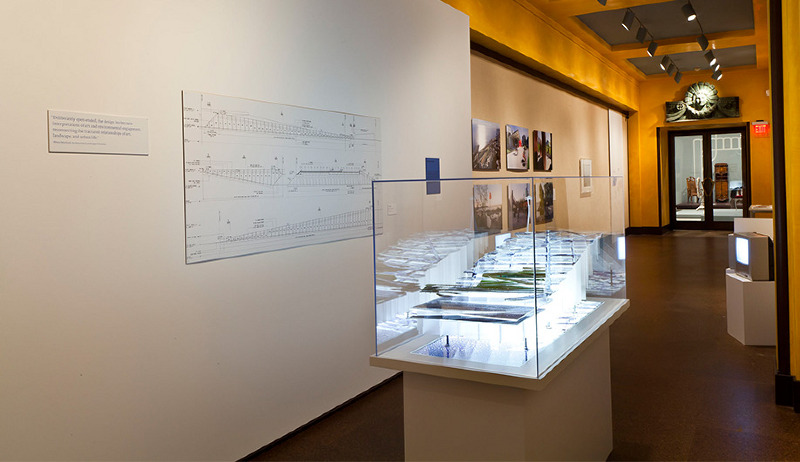
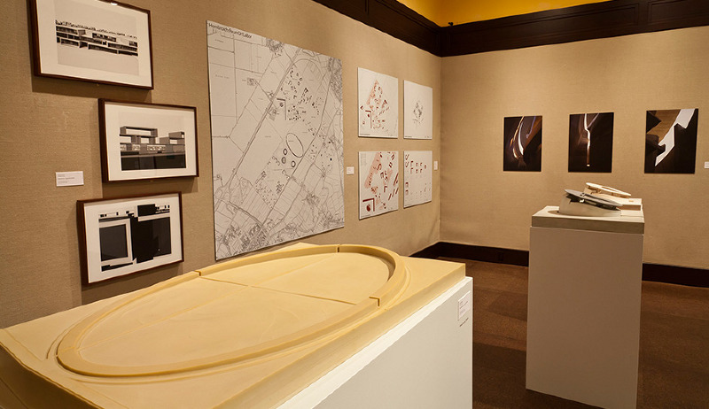
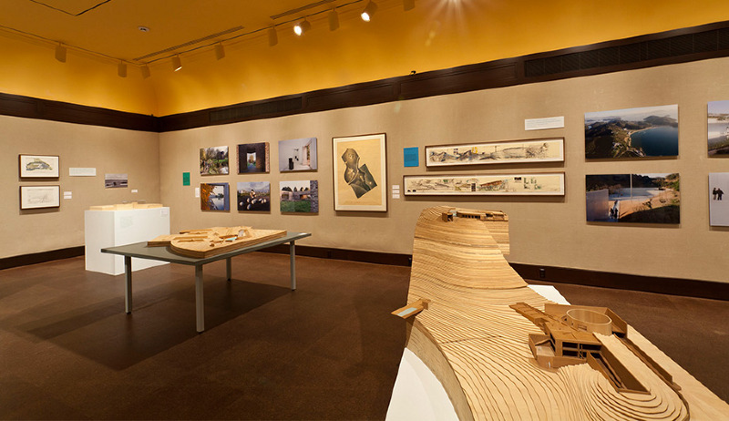
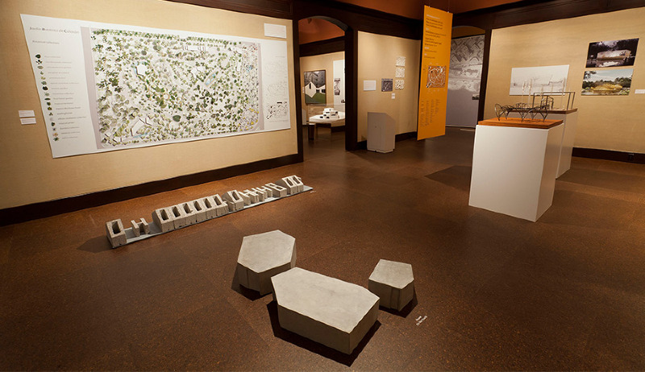
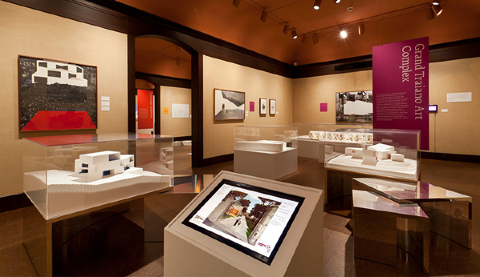
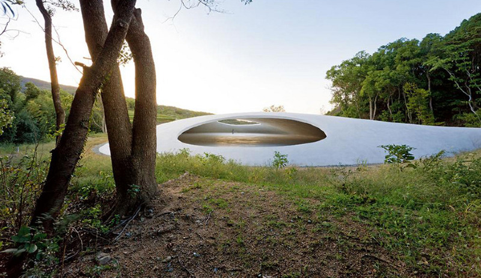
White Cube, Green Maze: New Art Landscapes
Heinz Architectural Center, Carnegie Museum of Art
Curatorial Intern. Pittsburgh, PA
White Cube, Green Maze: New Art Landscapes presents, in six case studies, the emergence of a new museum typology characterized by the synthesis of architecture, landscape design, and art in situ.
The show presented the Olympic Sculpture Park by Weiss+Manfredi, USA; Raketenstation by Raimund Abraham at Stiftung Insel-Hombroich, Germany; Jardin Botanico de Culiacan, by Taller de Operaciones Ambientales and Tatiana Bilbao, Brazil; the Grand Traiano Art Complex by Topotek 1, HHF Architects, and Johnston Marklee, Italy; and the Benesse Art Site Naoshima, with work by Tadao Ando and SANAA, Japan. In addition to models and original drawings, the exhibition showcased original photographs created by architectural photographer Iwan Baan.